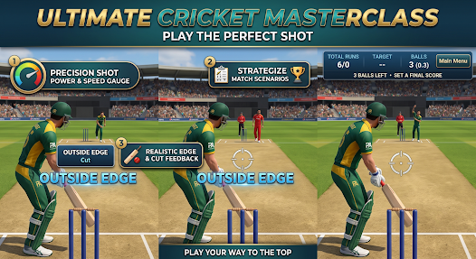

Extrude Studio Sports
Pro Cricket 3D
Real 3D batting and bowling, swipe controls, stadium matches, practice, T20, ODI and Quick Online 1v1.

Extrude Studio Sports
Real 3D batting and bowling, swipe controls, stadium matches, practice, T20, ODI and Quick Online 1v1.
